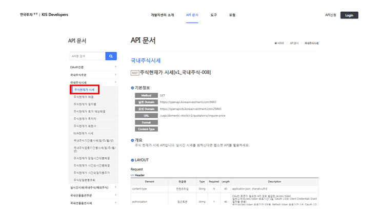
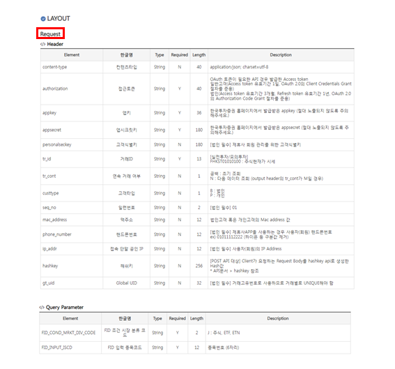
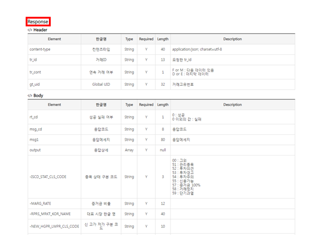
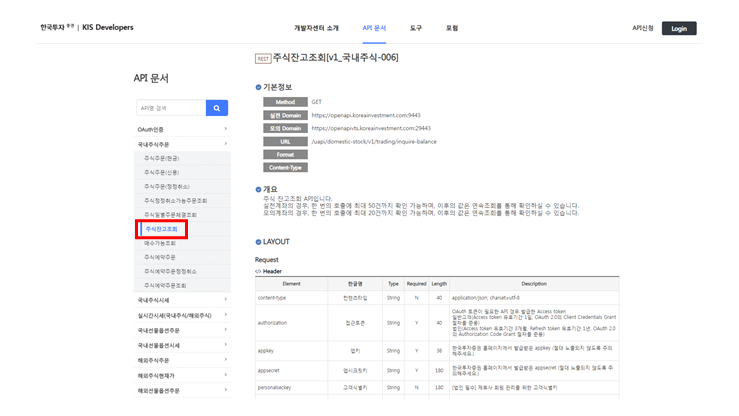
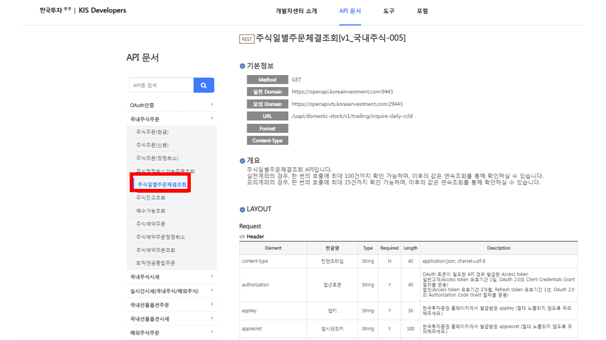
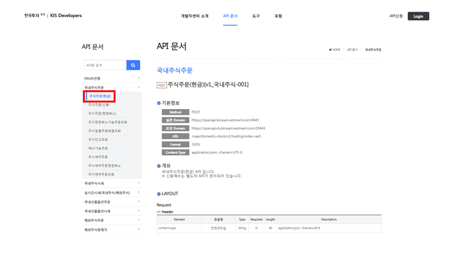

주요 함수 정의
Contents
주요 함수 정의#
현재가 조회#
원하는 시장가에 매수 주문을 넣기 위해서 해당 종목의 현재가를 조회해야 합니다. 현재가 조회 방법을 알아보기 위해서 KIS Developers 홈페이지 > API 문서 > 국내주식시세 > 주식현재가 시세(https://apiportal.koreainvestment.com/apiservice/apiservice-domestic-stock-quotations#L_07802512-4f49-4486-91b4-1050b6f5dc9d) 페이지에 접속하겠습니다.

기본정보에서 주식현재가 시세 조회가 GET 방식임을 확인할 수 있고, LAYOUT 을 통해 Request 함수의 headers 및 params의 인자 값들을 확인할 수 있습니다.

또한, 수신 받을 Response 객체의 형태도 미리 확인하고 원하는 데이터를 어떻게 추출할지도 알 수 있습니다.

Request 와 Response 문서를 참고하여 특정 종목의 현재가를 조회하는 함수는 아래와 같습니다.
def get_current_price(code="005930"):
"""현재가 조회"""
PATH = "uapi/domestic-stock/v1/quotations/inquire-price"
URL = f"{URL_BASE}/{PAH}"
headers = {"Content-Type":"application/json",
"authorization": f"Bearer {ACCESS_TOKEN}",
"appKey":APP_KEY,
"appSecret":APP_SECRET,
"tr_id":"FHKST01010100"
}
params = {
"fid_cond_mrkt_div_code":"J",
"fid_input_iscd":code,
}
res = requests.get(URL, headers=headers, params=params)
return int(res.json()['output']['stck_prpr'])
잔고 조회#
잔고 조회도 마찬가지로 KIS Developers의 API 문서를 참고하겠습니다. KIS Developers 홈페이지 > API 문서 > 국내주식주문 > 주식잔고조회(https://apiportal.koreainvestment.com/apiservice/apiservice-domestic-stock#L_66c61080-674f-4c91-a0cc-db5e64e9a5e6) 페이지에 접속하겠습니다.

앞에서의 현재가 조회와 마찬가지로 LAYOUT의 Request 문서를 참고하여 headers 및 params의 인자 값들을 확인할 수 있습니다. Response 문서에서 수신 데이터 형태를 미리 확인하고 원하는 데이터를 추출하는 코드를 작성합니다.
def get_stock_balance():
"""주식 잔고조회"""
PATH = "uapi/domestic-stock/v1/trading/inquire-balance"
URL = f"{URL_BASE}/{PATH}"
headers = {"Content-Type":"application/json",
"authorization":f"Bearer {ACCESS_TOKEN}",
"appKey":APP_KEY,
"appSecret":APP_SECRET,
"tr_id":"VTTC8434R", # 실전 투자 "TTTC8434R"
"custtype":"P",
}
params = {
"CANO": CANO,
"ACNT_PRDT_CD": ACNT_PRDT_CD,
"AFHR_FLPR_YN": "N",
"OFL_YN": "",
"INQR_DVSN": "02",
"UNPR_DVSN": "01",
"FUND_STTL_ICLD_YN": "N",
"FNCG_AMT_AUTO_RDPT_YN": "N",
"PRCS_DVSN": "01",
"CTX_AREA_FK100": "",
"CTX_AREA_NK100": ""
}
res = requests.get(URL, headers=headers, params=params)
stock_list = res.json()['output1']
evaluation = res.json()['output2']
stock_dict = {}
send_message(f"====주식 보유잔고====")
for stock in stock_list:
if int(stock['hldg_qty']) > 0:
stock_dict[stock['pdno']] = [stock['hldg_qty'], stock['evlu_pfls_rt']] # 0: 보유 수량, 1: 평가손익율
send_message(f"{stock['prdt_name']}({stock['pdno']}): {stock['hldg_qty']}주 {stock['evlu_pfls_rt']}")
time.sleep(0.1)
send_message(f"주식 평가 금액: {evaluation[0]['scts_evlu_amt']}원")
time.sleep(0.1)
send_message(f"평가 손익 합계: {evaluation[0]['evlu_pfls_smtl_amt']}원")
time.sleep(0.1)
send_message(f"총 평가 금액: {evaluation[0]['tot_evlu_amt']}원")
time.sleep(0.1)
send_message(f"=================")
return stock_dict
잔여 현금 조회#
잔여 현금 조회도 마찬가지로 KIS Developers의 API 문서를 참고하겠습니다. KIS Developers 홈페이지 > API 문서 > 국내주식주문 > 매수가능조회(https://apiportal.koreainvestment.com/apiservice/apiservice-domestic-stock#L_aade4c72-5fb7-418a-9ff2-254b4d5f0ceb) 페이지에 접속하겠습니다.

LAYOUT의 Request 문서를 참고하여 headers 및 params의 인자 값들을 확인할 수 있습니다. Response 문서에서 수신 데이터 형태를 미리 확인하고 원하는 데이터를 추출하는 코드를 작성합니다.
def get_balance():
"""현금 잔고조회"""
PATH = "uapi/domestic-stock/v1/trading/inquire-psbl-order" # <<<<<<<<<
URL = f"{URL_BASE}/{PATH}"
headers = {"Content-Type":"application/json", # <<<<<<<<<
"authorization":f"Bearer {ACCESS_TOKEN}",
"appKey":APP_KEY,
"appSecret":APP_SECRET,
"tr_id":"TTTC8908R", # <<<<<<<<<
"custtype":"P", # <<<<<<<<<
}
params = {
"CANO": CANO,
"ACNT_PRDT_CD": ACNT_PRDT_CD,
"PDNO": "005930", # <<<<<<<<<
"ORD_UNPR": "65500", # <<<<<<<<<
"ORD_DVSN": "01", # <<<<<<<<<
"CMA_EVLU_AMT_ICLD_YN": "Y", # <<<<<<<<<
"OVRS_ICLD_YN": "Y" # <<<<<<<<<
}
res = requests.get(URL, headers=headers, params=params)
cash = res.json()['output']['ord_psbl_cash'] # <<<<<<<<<
send_message(f"주문 가능 현금 잔고: {cash}원")
return int(cash)
5일 이상 보유 종목 조회#
5일 이상 보유 중인 종목을 조회하기 위해서는 주식일별주문체결 정보를 조회 해야 합니다. KIS Developers 홈페이지 > API 문서 > 국내주식주문 > 주식일별주문체결조회(https://apiportal.koreainvestment.com/apiservice/apiservice-domestic-stock#L_bc51f9f7-146f-4971-a5ae-ebd574acec12) 페이지에 접속하겠습니다.

LAYOUT의 Request 문서를 참고하여 headers 및 params의 인자 값들을 확인할 수 있습니다. Response 문서에서 수신 데이터 형태를 미리 확인하고 원하는 데이터를 추출하는 코드를 작성합니다.
def get_stock_5d_before():
def get_stock_before(date):
PATH = "uapi/domestic-stock/v1/trading/inquire-daily-ccld"
URL = f"{URL_BASE}/{PATH}"
headers = {"Content-Type":"application/json",
"authorization":f"Bearer {ACCESS_TOKEN}",
"appKey":APP_KEY,
"appSecret":APP_SECRET,
"tr_id":"VTTC8001R", # 실전 투자 "TTTC8001R"
"custtype":"P",
}
params = {
"CANO": CANO,
"ACNT_PRDT_CD": ACNT_PRDT_CD,
"INQR_STRT_DT": date,
"INQR_END_DT": date,
"SLL_BUY_DVSN_CD": "02", # 00:전체, 01:매도, 02:매수
"INQR_DVSN": "01", # 00: 역순
"PDNO": "",
"CCLD_DVSN": "01",
"ORD_GNO_BRNO":"",
"ODNO":"",
"INQR_DVSN_3": "01",
"INQR_DVSN_1": "",
"CTX_AREA_FK100": "",
"CTX_AREA_NK100": ""
}
res = requests.get(URL, headers=headers, params=params)
stock_dict = res.json()['output1']
return stock_dict
prev = 7
while prev < 15:
t_previous_5d = datetime.datetime.now().date() - datetime.timedelta(days=prev)
t_previous_5d = t_previous_5d.strftime("%Y%m%d")
bought_previous_5d_dict = get_stock_before(t_previous_5d)
if len(bought_previous_5d_dict) > 0:
break
else:
prev += 1
sell_list_5d_over = []
for stock in bought_previous_5d_dict:
sell_list_5d_over.append(stock['pdno'])
sell_list_5d_over = list(set(sell_list_5d_over))
return sell_list_5d_over
매수#
매수 주문도 마찬가지로 KIS Developers의 API 문서를 참고하겠습니다. KIS Developers 홈페이지 > API 문서 > 국내주식주문 > 주식주문(현금) (https://apiportal.koreainvestment.com/apiservice/apiservice-domestic-stock#L_aade4c72-5fb7-418a-9ff2-254b4d5f0ceb) 페이지에 접속하겠습니다.

앞의 조회 요청들과 달리 주문 요청은 기본정보에서 POST 방식임을 확인할 수 있고 보안을 위해서 headers에 hashkey 값을 입력해 줍니다.
def buy(code="005930", qty="1"):
"""주식 시장가 매수"""
PATH = "uapi/domestic-stock/v1/trading/order-cash" # <<<<<<<<<
URL = f"{URL_BASE}/{PATH}"
data = {
"CANO": CANO,
"ACNT_PRDT_CD": ACNT_PRDT_CD,
"PDNO": code,
"ORD_DVSN": "01",
"ORD_QTY": str(int(qty)), # <<<<<<<<<
"ORD_UNPR": "0", # <<<<<<<<<
}
headers = {"Content-Type":"application/json", # <<<<<<<<<
"authorization":f"Bearer {ACCESS_TOKEN}",
"appKey":APP_KEY,
"appSecret":APP_SECRET,
"tr_id":"TTTC0802U", # <<<<<<<<<
"custtype":"P", # <<<<<<<<<
"hashkey" : hashkey(data) # <<<<<<<<<
}
res = requests.post(URL, headers=headers, data=json.dumps(data))
if res.json()['rt_cd'] == '0': # <<<<<<<<< rt_cd 값이 0 이면 성공
send_message(f"[매수 성공]{str(res.json())}")
return True
else:
send_message(f"[매수 실패]{str(res.json())}")
return False
매도#
매도 주문은 매수 주문 코드와 거의 똑같습니다. 다만, 거래ID 가 다릅니다.
거래 ID |
정의 |
|---|---|
TTTC0802U |
매수 주문 |
TTTC0801U |
매도 주문 |
간단하게 headers 에서 거래 ID 만 바꿔 주겠습니다.
def sell(code="005930", qty="1"):
"""주식 시장가 매도"""
PATH = "uapi/domestic-stock/v1/trading/order-cash"
URL = f"{URL_BASE}/{PATH}"
data = {
"CANO": CANO,
"ACNT_PRDT_CD": ACNT_PRDT_CD,
"PDNO": code,
"ORD_DVSN": "01",
"ORD_QTY": qty,
"ORD_UNPR": "0",
}
headers = {"Content-Type":"application/json",
"authorization":f"Bearer {ACCESS_TOKEN}",
"appKey":APP_KEY,
"appSecret":APP_SECRET,
"tr_id":"TTTC0801U", # <<<<<<<<<
"custtype":"P",
"hashkey" : hashkey(data)
}
res = requests.post(URL, headers=headers, data=json.dumps(data))
if res.json()['rt_cd'] == '0':
send_message(f"[매도 성공]{str(res.json())}")
return True
else:
send_message(f"[매도 실패]{str(res.json())}")
return False
KIS Developers의 공식 API 문서를 참고해서 손쉽게 주요 함수들의 정의를 마쳤습니다. 이외에 더 궁금하거나 까닭 없이 에러가 발생하는 부분에 관해서는 KIS Develpers 포럼을 적극적으로 활용해 보시기 바랍니다. FAQ와 Q&A 세션에 이미 많은 질문과 응답들이 달려있습니다. 다음 절부터는 자동매매의 주요 로직과 코드를 중심적으로 설명드리겠습니다.